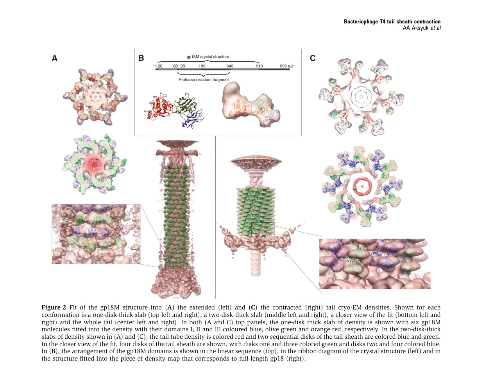

TODO: Add description for P13332
| GO Term | Evidence | Action | Reason |
|---|---|---|---|
|
GO:0046718
symbiont entry into host cell
|
IEA
GO_REF:0000043 |
PENDING |
Summary: TODO: Review this GOA annotation
|
|
GO:0098015
virus tail
|
IEA
GO_REF:0000043 |
PENDING |
Summary: TODO: Review this GOA annotation
|
|
GO:0098027
virus tail, sheath
|
IEA
GO_REF:0000043 |
PENDING |
Summary: TODO: Review this GOA annotation
|
|
GO:0099000
symbiont genome ejection through host cell envelope, contractile tail mechanism
|
IEA
GO_REF:0000043 |
PENDING |
Summary: TODO: Review this GOA annotation
|
|
GO:0098027
virus tail, sheath
|
IDA
PMID:19229296 The tail sheath structure of bacteriophage T4: a molecular m... |
PENDING |
Summary: TODO: Review this GOA annotation
|
The research report should be a detailed narrative explaining the function, biological processes, and localization of the gene product. Citations should be given for all claims.
You should prioritize authoritative reviews and primary scientific literature when conducting research. You can supplement
this with annotations you find in gene/protein databases, but these can be outdated or inaccurate.
We are specifically interested in the primary function of the gene - for enzymes, what reaction is catalyzed, and what is the substrate specificity? For transporters, what is the substrate? For structural proteins or adapters, what is the broader structural role? For signaling molecules, what is the role in the pathway.
We are interested in where in or outside the cell the gene product carries out its function.
We are also interested in the signaling or biochemical pathways in which the gene functions. We are less interested in broad pleiotropic effects, except where these elucidate the precise role.
Include evidence where possible. We are interested in both experimental evidence as well as inference from structure, evolution, or bioinformatic analysis. Precise studies should be prioritized over high-throughput, where available.
Target as provided: UniProt accession P13332, described as tail sheath protein (TSP), also called gene product 18 (gp18) from Enterobacteria phage T4.
Ambiguity note: The symbol “gene 18” is widely used across unrelated phages/viruses. The literature retrieved here consistently refers to bacteriophage T4 “gene product 18 (gp18)” as the contractile tail sheath protein, with a 659-aa polypeptide assembling into a 138-subunit sheath surrounding the tail tube. However, the retrieved primary papers do not explicitly mention UniProt accession P13332, so the mapping P13332 → T4 gp18 is taken from the user-provided UniProt record; all functional statements below are supported by gp18-specific T4 literature. (kostyuchenko2005thetailstructure pages 1-2, fokine2013themoleculararchitecture pages 1-2, aksyuk2009thetailsheath pages 1-2)
In myophages such as bacteriophage T4, the tail is a contractile injection machine. The tail sheath is the outer contractile cylinder that wraps around a central, relatively rigid tail tube; gp18 is the major structural subunit that polymerizes to form this contractile sheath. (aksyuk2009thetailsheath pages 1-2, kostyuchenko2005thetailstructure pages 2-3)
Functionally, sheath contraction is the key mechanical event that drives the tail tube into/through the bacterial cell envelope, creating a conduit for genome delivery. In T4, host recognition and baseplate rearrangements trigger a force on the bottom layer of the sheath that initiates contraction, and a contraction wave propagates along the sheath. (kostyuchenko2005thetailstructure pages 2-3, kostyuchenko2005thetailstructure pages 1-2)
Localization: gp18 forms the external contractile sheath of the mature virion tail, surrounding the gp19 tail tube. (fokine2013themoleculararchitecture pages 1-2, zinke2022majortailproteins pages 2-4)
Assembly architecture: Multiple high-impact structural studies describe the sheath as:
Assembly pathway context: A synthesis of tail morphogenesis work indicates that gp18 polymerizes cooperatively around the preformed/growing tail tube; tail length is controlled by the tape-measure protein gp29, and assembly terminates with additional terminator proteins (e.g., gp15 interacting with the terminal sheath ring). (arisaka2016molecularassemblyand pages 2-4, fokine2013themoleculararchitecture pages 1-2)
A consistent mechanistic picture from cryo-EM and crystallography is that gp18 subunits mainly move as rigid bodies that slide/repack, rather than undergoing large internal refolding. In particular, crystal structures fitted into cryo-EM reconstructions support the view that subunits “slide over each other” during contraction with limited internal conformational change. (aksyuk2009thetailsheath pages 1-2, aksyuk2009thetailsheath pages 2-4)
Contraction is coupled to baseplate activation following receptor interactions; in T4, baseplate expansion exerts a force on the sheath’s bottom layer, “pulling gp18 molecules away from the tail tube” to initiate the contraction wave. (kostyuchenko2005thetailstructure pages 2-3)
High-resolution fragment structures support a multi-domain gp18 organization. Aksyuk et al. describe gp18 as an S-shaped multidomain protein with three resolved domains (I–III) and a proposed C-terminal domain IV not resolved in the gp18M fragment. (aksyuk2009thetailsheath pages 2-4)
A distinctive property of gp18 is its strong intrinsic propensity to self-assemble into “polysheaths” (tubular polymers) even without the full tail/baseplate context; these polysheaths can share helical parameters with the contracted state, supporting the idea that the contracted-like lattice is an energetically favored assembly for gp18. (aksyuk2009thetailsheath pages 1-2, arisaka2016molecularassemblyand pages 6-8)
Direct, T4 gp18–specific primary structural papers are mostly earlier (e.g., 2005–2016), but 2023–2024 work advances the field in ways that directly support functional annotation confidence (conservation of contractile sheath/tail principles, improved structural atlases, and engineering readiness).
A 2024 Communications Biology study built a high-resolution structural atlas of a therapeutic, contractile-tailed Pseudomonas phage Pa193 using cryo-EM with localized reconstructions and integrative annotation (bioinformatics + proteomics), producing atomic models for 21 structural polypeptides across capsid/neck/tail/baseplate. The authors explicitly frame these atlases as supporting phages as biomedicines and “inform engineering opportunities,” reflecting a current emphasis on structure-guided phage development. While not T4 gp18 specifically, this demonstrates modern practice for annotating contractile tail components analogous to T4’s sheath/tube modules. (publication: Oct 2024; https://doi.org/10.1038/s42003-024-06985-x) (iglesias2024cryoemanalysisof pages 1-2, iglesias2024cryoemanalysisof pages 2-4)
A 2024 Nature Communications study of cyanophage A-1(L) reports a high-resolution cryo-EM structure of an intact tail machine and explicitly states that the structure helped reannotate its genome, illustrating how modern cryo-EM resolves tail architecture and improves gene/protein functional calls—an approach directly relevant to accurate annotation of sheath proteins like gp18 across myophages. (publication: Mar 2024; https://doi.org/10.1038/s41467-024-47006-z) (iglesias2024cryoemanalysisof pages 1-2)
A broad 2022 analysis modeled 112 contractile phage tail sheath proteins with AlphaFold2 and concluded there is a conserved sheath core shared across phage sheaths and related systems, with additional domains likely added during evolution for virion stability or host interactions. Although not 2023–2024, this work is part of the recent ML-driven wave supporting domain-level inference for proteins like T4 gp18 and is relevant to interpreting UniProt domain calls (e.g., β-sandwich cores). (publication: May 2022; https://doi.org/10.3390/v14061148) (gonzalez2021structuralstudiesof pages 18-20)
A 2018 review of artificial bio-nanomachines derived from bacteriophage T4 describes repurposing of tail components for engineering. It emphasizes that the gp5 protein needle at the baseplate center can be engineered to retain puncturing ability and be adapted to deliver cargos into living cells (delivery-device concept). The same review notes that gp18 sheath proteins have been used to form nano-assembled tubes consisting of sheath proteins, i.e., sheath-derived tubular nanostructures (material/scaffold concept). (publication: Nov 2018; https://doi.org/10.1007/s12551-017-0336-9) (inaba2018artificialbionanomachinesbased pages 1-3)
The 2024 Pa193 structural atlas explicitly connects high-resolution structural annotation to phage therapy and engineering opportunities, underscoring that contractile tail component mapping (including sheath-like proteins) is now being performed in therapeutically oriented projects. (publication: Oct 2024; https://doi.org/10.1038/s42003-024-06985-x) (iglesias2024cryoemanalysisof pages 1-2)
Caveat: These application sources do not establish gp18 itself as a deployed clinical product; rather, they document proof-of-concept engineering and translational pipelines for phage-derived machines. (inaba2018artificialbionanomachinesbased pages 1-3, iglesias2024cryoemanalysisof pages 1-2)
The T4 tail sheath has long served as a canonical model for contractile injection systems, with expert syntheses framing the sheath/tube pair (gp18/gp19 in T4) as the core repeating module of contractile phage tails. This framing supports high-confidence molecular-function annotation of gp18 as a structural contractile sheath component rather than an enzyme or receptor-binding protein. (zinke2022majortailproteins pages 2-4)
Across primary structural studies, a coherent mechanistic consensus emerges: host recognition triggers baseplate rearrangement, which mechanically initiates sheath contraction; the contraction propagates along the sheath and involves repacking/sliding of gp18 subunits with limited internal refolding. (kostyuchenko2005thetailstructure pages 2-3, aksyuk2009thetailsheath pages 1-2)
Key quantitative parameters repeatedly reported for T4 gp18 sheath include:
These parameters can be used directly in functional annotation as evidence for gp18’s role in a mechanically actuated lattice transition rather than catalytic activity. (kostyuchenko2005thetailstructure pages 2-3)
A 2017 Biophysical Journal modeling study (built on structural measurements and prior energetics reports) compiles quantitative estimates used to interpret the mechanical role of gp18 contraction:
These values are not direct single-molecule measurements of gp18 but provide quantitative bounds and engineering-relevant parameters within a modeling framework explicitly aimed at understanding T4 injection mechanics. (maghsoodi2017dynamicmodelexposes pages 1-3)
Gene 18 (gp18) encodes the major tail sheath protein that polymerizes into the outer contractile sheath of bacteriophage T4 and acts as a force-generating structural element; its functional output is mechanical (contraction) rather than catalytic chemistry. (aksyuk2009thetailsheath pages 1-2, kostyuchenko2005thetailstructure pages 1-2)
gp18 functions in:
gp18 is a virion structural protein, localized to the tail sheath (external to the tail tube) and interfacing with baseplate components at the distal end and terminator/neck components at the proximal end. (fokine2013themoleculararchitecture pages 1-2, kostyuchenko2005thetailstructure pages 2-3)
| Evidence type | Molecular function | Biological process step | Subcellular/virion localization | Key structural/assembly details (stoichiometry, dimensions, helical parameters, domains) | Quantitative data | Key references (with year, DOI URL) |
|---|---|---|---|---|---|---|
| Identity verification / database-to-literature mapping (direct T4 gp18 in papers; UniProt P13332 mapping assumed from user-provided accession because retrieved papers do not explicitly cite P13332) | Structural tail sheath protein (gp18; gene product 18) of bacteriophage T4 | Tail morphogenesis and infection apparatus function | Outer contractile sheath surrounding the gp19 tail tube in the mature virion | gp18 is described as the T4 tail sheath protein; wild-type protein is 659 aa and forms the sheath around the tail tube; literature consistently refers to “gene product 18/gp18” as the sheath subunit, but no retrieved paper explicitly maps this to UniProt P13332 | 659 aa; ~71 kDa; sheath contains 138 subunits arranged as 23 hexameric rings / six-start helix | Aksyuk et al., 2009, https://doi.org/10.1038/emboj.2009.36; Kostyuchenko et al., 2005, https://doi.org/10.1038/nsmb975; Fokine et al., 2013, https://doi.org/10.1016/j.jmb.2013.02.012 (aksyuk2009thetailsheath pages 1-2, kostyuchenko2005thetailstructure pages 1-2, fokine2013themoleculararchitecture pages 1-2) |
| Direct T4 gp18 | Contractile sheath subunit that converts stored metastable/elastic energy into mechanical work to drive tail tube penetration | Infection initiation after host recognition and baseplate activation | External sheath wrapped around the central non-contractile tail tube; bottom ring contacts the baseplate, top ring interfaces with tail terminator/neck region | Contraction is triggered by receptor engagement via baseplate rearrangement; gp18 subunits move largely as rigid bodies and slide relative to one another rather than refolding extensively | Sheath shortens from ~925 Å to ~420 Å; diameter expands from ~240 Å to ~330 Å; ring rise changes from ~40.6 Å to ~16.4 Å; twist changes from ~17.2° to ~32.9° | Kostyuchenko et al., 2005, https://doi.org/10.1038/nsmb975; Aksyuk et al., 2009, https://doi.org/10.1038/emboj.2009.36 (kostyuchenko2005thetailstructure pages 2-3, aksyuk2009thetailsheath pages 1-2) |
| Direct T4 gp18 | Major structural component of the tail sheath; scaffold for a six-start helical contractile machine | Tail assembly/morphogenesis | Surrounds gp19 tail tube along the tail shaft | 138 gp18 molecules arranged into 23 stacked hexameric rings; equivalently described as a six-start helix; assembly occurs around the preformed tail tube, with tube length set by tape-measure protein gp29 and termination involving gp3/gp15 | 23 rings × 6 subunits = 138 subunits; successive rings rotated by 17.2° and translated by 40.6 Å in the extended state | Fokine et al., 2013, https://doi.org/10.1016/j.jmb.2013.02.012; Arisaka et al., 2016, https://doi.org/10.1007/s12551-016-0230-x; Zinke et al., 2022, https://doi.org/10.1016/j.jbc.2021.101472 (fokine2013themoleculararchitecture pages 1-2, arisaka2016molecularassemblyand pages 2-4, zinke2022majortailproteins pages 2-4) |
| Direct T4 gp18 | Self-assembling sheath protein capable of polymerizing into contracted-like tubular polysheaths in the absence of the full virion | Sheath self-assembly/polymerization | Normally virion tail sheath; experimentally can form free polysheaths in vitro/in vivo | Wild-type gp18 and truncation constructs self-assemble into tubular polysheaths with helical parameters resembling the contracted sheath; indicates intrinsic polymerization program of the sheath protein | Polysheaths resemble contracted-state geometry; even substantial C-terminal truncations still allow tubular assembly, though with altered helical parameters | Aksyuk et al., 2009, https://doi.org/10.1038/emboj.2009.36; Arisaka et al., 2016, https://doi.org/10.1007/s12551-016-0230-x (aksyuk2009thetailsheath pages 1-2, arisaka2016molecularassemblyand pages 6-8) |
| Direct T4 gp18 | Multi-domain structural protein mediating sheath assembly, sheath-tube interaction, and baseplate-linked triggering | Structural stabilization and contraction coupling during tail assembly/infection | Domains are arranged within the sheath subunit; termini oriented toward the sheath interior; protease-resistant core surface exposed | gp18M/gp18PR structural studies define domains I–III with an unresolved C-terminal domain IV; domain I likely participates in baseplate/retracting tail-fiber interactions; C-terminal domain interacts with the tail tube and terminal ring contacts gp15 | Domain I: residues 98–188; Domain II: residues 88–97 and 189–345; Domain III: residues 20–87 and 346–510; unresolved domain IV ~510–659 | Aksyuk et al., 2009, https://doi.org/10.1038/emboj.2009.36; Fokine et al., 2013, https://doi.org/10.1016/j.jmb.2013.02.012 (aksyuk2009thetailsheath pages 2-4, fokine2013themoleculararchitecture pages 1-2) |
| Direct T4 gp18 | Cooperative polymerizing sheath component in tail biogenesis | Ordered tail assembly before sheath termination/head attachment | External tail sheath assembled on tube-baseplate intermediate | gp18 polymerizes cooperatively around the growing tail tube soon after tube polymerization starts; nucleation is difficult and intermediate-length sheaths are uncommon; gp18 assembles before sheath terminator gp15 | ~138 copies per virion; contraction is exothermic by microcalorimetry; heat or urea can induce contraction experimentally | Arisaka et al., 2016, https://doi.org/10.1007/s12551-016-0230-x (arisaka2016molecularassemblyand pages 2-4, arisaka2016molecularassemblyand pages 6-8) |
| Direct T4 gp18 + modeling inference from direct T4 geometry | Mechanical energy storage/release element of a nanoscale injector | Force generation for piercing the host envelope and supporting DNA delivery | Contractile sheath of the T4 injection machinery | Modeling treats the sheath as six interacting helical protein strands/elastic rods coupled to tail tube and capsid; informed by direct T4 structural parameters | Prior estimates cited in modeling work: ~3400 kcal/mol gp18 for urea-induced contraction, ~6000 kcal/mol gp18 for heat-induced contraction; lower-bound cell-rupture force estimate ~103 pN | Maghsoodi et al., 2017, https://doi.org/10.1016/j.bpj.2017.05.029; Maghsoodi et al., 2016, https://doi.org/10.1115/1.4033554 (maghsoodi2017dynamicmodelexposes pages 1-3, maghsoodi2016afirstmodel pages 1-2) |
| Homolog/inference from broader sheath-family analyses | Conserved contractile sheath fold that mediates interaction with tail tube and assembly across myophages/CISs | Evolution of contractile injection systems; comparative functional inference for gp18 family | Contractile sheaths of myophages and related systems | Comparative structural analyses indicate a conserved sheath core shared with other phage sheaths and contractile injection systems; added domains likely modulate stability/host interactions | Structural conservation observed across modeled sheath proteins; T4 gp18 used as a reference in evolutionary analyses | Evseev et al., 2022, https://doi.org/10.3390/v14061148; Aksyuk et al., 2011, https://doi.org/10.1016/j.str.2011.09.012 (gonzalez2021structuralstudiesof pages 18-20, arisaka2016molecularassemblyand pages 2-4) |
| Homolog/application inference anchored to T4 components | Inspiration/template for engineered bio-nanomachines and delivery systems; sheath-derived nanotube/scaffold concept | Nanotechnology, intracellular delivery, and phage engineering applications | Engineered derivatives of phage tail components rather than native virion localization | Reviews of T4-derived bio-nanomachines emphasize modular use of tail components; gp18 specifically noted in nano-assembled sheath tubes, while other T4 tail parts (e.g., gp5 needle) have been engineered for cargo delivery | No direct clinical implementation for gp18 itself reported here; application evidence is primarily preclinical/conceptual engineering | Inaba & Ueno, 2018, https://doi.org/10.1007/s12551-017-0336-9; Iglesias et al., 2024, https://doi.org/10.1038/s42003-024-06985-x (inaba2018artificialbionanomachinesbased pages 1-3, iglesias2024cryoemanalysisof pages 1-2) |
| Recent 2023–2024 context (homolog/inference, not direct gp18-specific experiments) | Contractile sheath proteins remain central to therapeutic phage structural atlases and engineering-ready phage characterization | Structural annotation of therapeutic/engineering-relevant myophages | Contractile tails of therapeutic or chassis phages | 2024 cryo-EM atlases of therapeutic myophages and 2024 intact-tail structures of myophages reinforce conservation of T4-like sheath architecture/mechanistic principles and support rational engineering | Examples include ~500 Å resolved tail fibers in therapeutic phage Pa193 and ~1045 Å contractile tail in cyanophage A-1(L) | Iglesias et al., 2024, https://doi.org/10.1038/s42003-024-06985-x; Yu et al., 2024, https://doi.org/10.1038/s41467-024-47006-z (iglesias2024cryoemanalysisof pages 1-2, iglesias2024cryoemanalysisof pages 2-4) |
Table: This table summarizes experimentally supported functional annotation for Enterobacteria phage T4 gene product 18 (gp18), the tail sheath protein, and clearly distinguishes direct T4 evidence from homolog-based inference. It also flags that mapping to UniProt P13332 is assumed from the user-provided accession because the retrieved papers identify gp18 directly but do not explicitly cite the UniProt entry.
Aksyuk et al. provide figures showing gp18 domain organization and fits into extended vs contracted cryo-EM densities, supporting domain-based functional inference and the rigid-body nature of the conformational transition. (aksyuk2009thetailsheath media 4e9e34c9, aksyuk2009thetailsheath media b49476bc, aksyuk2009thetailsheath media 12f391ef)
References
(kostyuchenko2005thetailstructure pages 1-2): Victor A Kostyuchenko, Paul R Chipman, Petr G Leiman, Fumio Arisaka, Vadim V Mesyanzhinov, and Michael G Rossmann. The tail structure of bacteriophage t4 and its mechanism of contraction. Nature Structural &Molecular Biology, 12:810-813, Sep 2005. URL: https://doi.org/10.1038/nsmb975, doi:10.1038/nsmb975. This article has 220 citations.
(fokine2013themoleculararchitecture pages 1-2): Andrei Fokine, Zhihong Zhang, Shuji Kanamaru, Valorie D. Bowman, Anastasia A. Aksyuk, Fumio Arisaka, Venigalla B. Rao, and Michael G. Rossmann. The molecular architecture of the bacteriophage t4 neck. Journal of molecular biology, 425 10:1731-44, May 2013. URL: https://doi.org/10.1016/j.jmb.2013.02.012, doi:10.1016/j.jmb.2013.02.012. This article has 101 citations and is from a domain leading peer-reviewed journal.
(aksyuk2009thetailsheath pages 1-2): Anastasia A Aksyuk, Petr G Leiman, Lidia P Kurochkina, Mikhail M Shneider, Victor A Kostyuchenko, Vadim V Mesyanzhinov, and Michael G Rossmann. The tail sheath structure of bacteriophage t4: a molecular machine for infecting bacteria. The EMBO Journal, 28:821-829, Feb 2009. URL: https://doi.org/10.1038/emboj.2009.36, doi:10.1038/emboj.2009.36. This article has 150 citations.
(kostyuchenko2005thetailstructure pages 2-3): Victor A Kostyuchenko, Paul R Chipman, Petr G Leiman, Fumio Arisaka, Vadim V Mesyanzhinov, and Michael G Rossmann. The tail structure of bacteriophage t4 and its mechanism of contraction. Nature Structural &Molecular Biology, 12:810-813, Sep 2005. URL: https://doi.org/10.1038/nsmb975, doi:10.1038/nsmb975. This article has 220 citations.
(zinke2022majortailproteins pages 2-4): Maximilian Zinke, Gunnar F. Schröder, and Adam Lange. Major tail proteins of bacteriophages of the order caudovirales. Journal of Biological Chemistry, 298:101472, Jan 2022. URL: https://doi.org/10.1016/j.jbc.2021.101472, doi:10.1016/j.jbc.2021.101472. This article has 101 citations and is from a domain leading peer-reviewed journal.
(arisaka2016molecularassemblyand pages 2-4): Fumio Arisaka, Moh Lan Yap, Shuji Kanamaru, and Michael G. Rossmann. Molecular assembly and structure of the bacteriophage t4 tail. Biophysical Reviews, 8:385-396, Nov 2016. URL: https://doi.org/10.1007/s12551-016-0230-x, doi:10.1007/s12551-016-0230-x. This article has 55 citations and is from a peer-reviewed journal.
(aksyuk2009thetailsheath pages 2-4): Anastasia A Aksyuk, Petr G Leiman, Lidia P Kurochkina, Mikhail M Shneider, Victor A Kostyuchenko, Vadim V Mesyanzhinov, and Michael G Rossmann. The tail sheath structure of bacteriophage t4: a molecular machine for infecting bacteria. The EMBO Journal, 28:821-829, Feb 2009. URL: https://doi.org/10.1038/emboj.2009.36, doi:10.1038/emboj.2009.36. This article has 150 citations.
(arisaka2016molecularassemblyand pages 6-8): Fumio Arisaka, Moh Lan Yap, Shuji Kanamaru, and Michael G. Rossmann. Molecular assembly and structure of the bacteriophage t4 tail. Biophysical Reviews, 8:385-396, Nov 2016. URL: https://doi.org/10.1007/s12551-016-0230-x, doi:10.1007/s12551-016-0230-x. This article has 55 citations and is from a peer-reviewed journal.
(iglesias2024cryoemanalysisof pages 1-2): Stephano M. Iglesias, Chun-Feng David Hou, Johnny Reid, Evan Schauer, Renae Geier, Angela Soriaga, Lucy Sim, Lucy Gao, Julian Whitelegge, Pierre Kyme, Deborah Birx, Sebastien Lemire, and Gino Cingolani. Cryo-em analysis of pseudomonas phage pa193 structural components. Communications Biology, Oct 2024. URL: https://doi.org/10.1038/s42003-024-06985-x, doi:10.1038/s42003-024-06985-x. This article has 11 citations and is from a peer-reviewed journal.
(iglesias2024cryoemanalysisof pages 2-4): Stephano M. Iglesias, Chun-Feng David Hou, Johnny Reid, Evan Schauer, Renae Geier, Angela Soriaga, Lucy Sim, Lucy Gao, Julian Whitelegge, Pierre Kyme, Deborah Birx, Sebastien Lemire, and Gino Cingolani. Cryo-em analysis of pseudomonas phage pa193 structural components. Communications Biology, Oct 2024. URL: https://doi.org/10.1038/s42003-024-06985-x, doi:10.1038/s42003-024-06985-x. This article has 11 citations and is from a peer-reviewed journal.
(gonzalez2021structuralstudiesof pages 18-20): Brenda Gonzalez. Structural studies of the phage g capsid and helical tail sheath using cryo-em. ArXiv, Aug 2021. URL: https://doi.org/10.25394/pgs.15156780.v1, doi:10.25394/pgs.15156780.v1. This article has 0 citations.
(inaba2018artificialbionanomachinesbased pages 1-3): Hiroshi Inaba and Takafumi Ueno. Artificial bio-nanomachines based on protein needles derived from bacteriophage t4. Biophysical Reviews, 10:641-658, Nov 2018. URL: https://doi.org/10.1007/s12551-017-0336-9, doi:10.1007/s12551-017-0336-9. This article has 13 citations and is from a peer-reviewed journal.
(fokine2013themoleculararchitecture pages 2-4): Andrei Fokine, Zhihong Zhang, Shuji Kanamaru, Valorie D. Bowman, Anastasia A. Aksyuk, Fumio Arisaka, Venigalla B. Rao, and Michael G. Rossmann. The molecular architecture of the bacteriophage t4 neck. Journal of molecular biology, 425 10:1731-44, May 2013. URL: https://doi.org/10.1016/j.jmb.2013.02.012, doi:10.1016/j.jmb.2013.02.012. This article has 101 citations and is from a domain leading peer-reviewed journal.
(maghsoodi2017dynamicmodelexposes pages 1-3): Ameneh Maghsoodi, Anupam Chatterjee, Ioan Andricioaei, and Noel C. Perkins. Dynamic model exposes the energetics and dynamics of the injection machinery for bacteriophage t4. Biophysical journal, 113 1:195-205, Jul 2017. URL: https://doi.org/10.1016/j.bpj.2017.05.029, doi:10.1016/j.bpj.2017.05.029. This article has 14 citations and is from a domain leading peer-reviewed journal.
(maghsoodi2016afirstmodel pages 1-2): Ameneh Maghsoodi, Anupam Chatterjee, Ioan Andricioaei, and N. C. Perkins. A first model of the dynamics of the bacteriophage t4 injection machinery. Journal of Computational and Nonlinear Dynamics, 11:041026, Jul 2016. URL: https://doi.org/10.1115/1.4033554, doi:10.1115/1.4033554. This article has 14 citations and is from a peer-reviewed journal.
(aksyuk2009thetailsheath media 4e9e34c9): Anastasia A Aksyuk, Petr G Leiman, Lidia P Kurochkina, Mikhail M Shneider, Victor A Kostyuchenko, Vadim V Mesyanzhinov, and Michael G Rossmann. The tail sheath structure of bacteriophage t4: a molecular machine for infecting bacteria. The EMBO Journal, 28:821-829, Feb 2009. URL: https://doi.org/10.1038/emboj.2009.36, doi:10.1038/emboj.2009.36. This article has 150 citations.
(aksyuk2009thetailsheath media b49476bc): Anastasia A Aksyuk, Petr G Leiman, Lidia P Kurochkina, Mikhail M Shneider, Victor A Kostyuchenko, Vadim V Mesyanzhinov, and Michael G Rossmann. The tail sheath structure of bacteriophage t4: a molecular machine for infecting bacteria. The EMBO Journal, 28:821-829, Feb 2009. URL: https://doi.org/10.1038/emboj.2009.36, doi:10.1038/emboj.2009.36. This article has 150 citations.
(aksyuk2009thetailsheath media 12f391ef): Anastasia A Aksyuk, Petr G Leiman, Lidia P Kurochkina, Mikhail M Shneider, Victor A Kostyuchenko, Vadim V Mesyanzhinov, and Michael G Rossmann. The tail sheath structure of bacteriophage t4: a molecular machine for infecting bacteria. The EMBO Journal, 28:821-829, Feb 2009. URL: https://doi.org/10.1038/emboj.2009.36, doi:10.1038/emboj.2009.36. This article has 150 citations.
(maghsoodi2017dynamicmodelexposes pages 3-4): Ameneh Maghsoodi, Anupam Chatterjee, Ioan Andricioaei, and Noel C. Perkins. Dynamic model exposes the energetics and dynamics of the injection machinery for bacteriophage t4. Biophysical journal, 113 1:195-205, Jul 2017. URL: https://doi.org/10.1016/j.bpj.2017.05.029, doi:10.1016/j.bpj.2017.05.029. This article has 14 citations and is from a domain leading peer-reviewed journal.

id: P13332
gene_symbol: P13332
product_type: PROTEIN
status: INITIALIZED
taxon:
id: NCBITaxon:10665
label: Enterobacteria phage T4
description: 'TODO: Add description for P13332'
existing_annotations:
- term:
id: GO:0046718
label: symbiont entry into host cell
evidence_type: IEA
original_reference_id: GO_REF:0000043
review:
summary: 'TODO: Review this GOA annotation'
action: PENDING
- term:
id: GO:0098015
label: virus tail
evidence_type: IEA
original_reference_id: GO_REF:0000043
review:
summary: 'TODO: Review this GOA annotation'
action: PENDING
- term:
id: GO:0098027
label: virus tail, sheath
evidence_type: IEA
original_reference_id: GO_REF:0000043
review:
summary: 'TODO: Review this GOA annotation'
action: PENDING
- term:
id: GO:0099000
label: symbiont genome ejection through host cell envelope, contractile tail mechanism
evidence_type: IEA
original_reference_id: GO_REF:0000043
review:
summary: 'TODO: Review this GOA annotation'
action: PENDING
- term:
id: GO:0098027
label: virus tail, sheath
evidence_type: IDA
original_reference_id: PMID:19229296
review:
summary: 'TODO: Review this GOA annotation'
action: PENDING
references:
- id: GO_REF:0000043
title: Gene Ontology annotation based on UniProtKB/Swiss-Prot keyword mapping
findings: []
- id: PMID:19229296
title: 'The tail sheath structure of bacteriophage T4: a molecular machine for infecting
bacteria.'
findings: []
{kind=link}